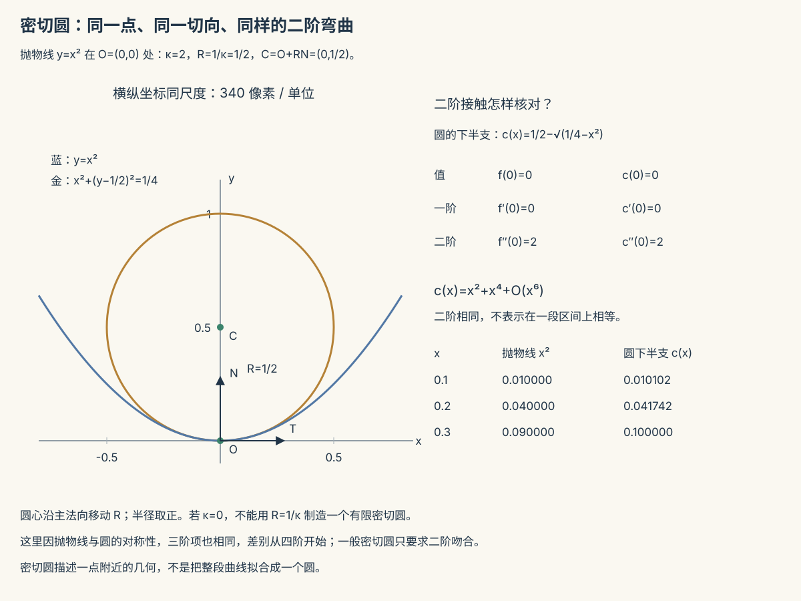

本页目录
微分几何 I · 曲线论
微分几何 = 用微积分研究弯曲的对象。第一站是空间曲线：一条曲线的全部几何由两个函数决定——曲率（弯多快）与挠率（扭多快）。这个"完全分类"由 Frenet 标架实现：给曲线随身携带一个正交坐标系，微积分与线性代数在此合演。
学习层：先找定义域，再让四条曲线交出 Frenet 账本
1. 具体开场：同一条几何曲线，换一个钟表会变什么？
先比较四个精确模型，并在打开实验前写下预测：
| 模型 | 参数式 | 先猜的问题 |
|---|---|---|
| 直线 | \(\mathbf r(u)=(u,0,0)\) | 曲线正则，但 \(\kappa=0\) 时能否仍然写 \(N=T'/\kappa\)？ |
| 圆 | \(\mathbf r(u)=(2\cos u,2\sin u,0)\) | 把 \(u\) 换成 \(2t\) 后，speed、弧长坐标、\(\kappa\)、\(\tau\) 各怎样变？ |
| 螺旋线 | \(\mathbf r(u)=(2\cos u,2\sin u,u)\) | \(\tau\) 是 0 还是非零？\(T,N,B\) 是否仍然正交？ |
| 拐点曲线 | \(\mathbf r(u)=(u,u^3,0)\) | \(u=0\) 处速度不为 0，为什么主法向仍会失效？ |
以螺旋线 \(u=0.8\) 为默认探针。实验的 prediction gate 会先收下四项判断，再展示向量图和逐项账本；拖动参数速度后，预测会重新锁定，避免把上一组结论误读成新模型的证据。
2. 形式桥：从参数速度到内在量
曲线 \(\mathbf r:I\to\mathbb R^3\) 的正则性是 \(\mathbf r'(t)\ne0\)。速度、弧长和单位切向量分别为
若 \(\mathbf r\) 足够光滑且 \(\mathbf r'\times\mathbf r''\ne0\)，才可定义完整 Frenet 标架：
这里有两个不同的门槛：\(\mathbf r'\ne0\) 保证 \(T\) 存在；\(\kappa>0\) 才允许除以 \(\kappa\) 得到 \(N\)。正则不等于 Frenet 标架处处存在。
对正的正则重参数化 \(u=\lambda t\)，有
因此 speed 和“走到哪里”的弧长坐标依赖钟表，\(\kappa,\tau\) 在 Frenet 定义域内是几何量。若 \(\lambda<0\) 或参数不正则，方向与定义域要另行记账，不能把这句不加条件地延伸。
四个模型的精确结果如下：
- 直线：\(v=1,\ s=u,\ \kappa=0\)。\(T=(1,0,0)\) 存在，但 \(N=T'/\kappa\) 是 \(0/0\)，所以 \(N,B,\tau\) 在 Frenet 意义下未定义；实验明确显示“拒绝除以 0”。
- 圆：\(v=2,\ s=2u,\ \kappa=1/2,\ \tau=0\)， \(T=(-\sin u,\cos u,0)\)、\(N=(-\cos u,-\sin u,0)\)、\(B=(0,0,1)\)。
- 螺旋线：\(v=\sqrt5,\ s=\sqrt5u,\ \kappa=2/5,\ \tau=1/5\)， [ T=\frac{(-2\sin u,2\cos u,1)}{\sqrt5},\quad N=(-\cos u,-\sin u,0),\quad B=\frac{(\sin u,-\cos u,2)}{\sqrt5}. ]
- 拐点曲线：\(v=\sqrt{1+9u^4}\)， [ s(u)=\int_0^u\sqrt{1+9q^4}\,dq,\qquad \kappa=\frac{6|u|}{(1+9u^4)^{3/2}},\qquad \tau=0\quad(u\ne0). ] 在 \(u=0\) 处速度为 1 但 \(\kappa=0\)，正是“正则而没有主法向”的反例；有符号曲率从负变正，法向在两侧的极限方向也不应被强行拼成一个 Frenet 向量。
3. 误区与模型边界：不要让公式替定义域背锅
| 容易说错的句子 | 精确修正 |
|---|---|
| “曲线正则，所以 Frenet 标架总存在。” | 正则只给 \(T\)。还需 \(\mathbf r'\times\mathbf r''\ne0\)，即 \(\kappa>0\)，才能给 \(N,B,\tau\)。 |
| “拐点处只是数值不稳定，取一个附近的 \(N\) 就行。” | 拐点处 \(N\) 的定义真的失效；可讨论有符号曲率、左右极限或 Bishop 标架，但那是换模型，不是偷偷除零。 |
| “\(\tau=0\) 就说明每一点的 Frenet \(B\) 都存在。” | 平面曲线在 \(\kappa>0\) 的区间内有 \(\tau=0\)；若曲率为零，\(\tau\) 的混合积公式也可能无定义。 |
| “参数变快，曲线就弯得更厉害。” | 参数速度改变 \(v,s\) 和向量随参数的导数，不改变正则重参数化下的 \(\kappa,\tau\)。 |
| “\((\kappa,\tau)\) 总能完整分类。” | 基本定理通常要求弧长参数、\(\kappa>0\) 及足够正则性；直线和拐点是边界，需要分段或换标架叙述。 |
4. Frenet 互动实验
下面的实验只使用解析导数和确定性 SVG。红点是探针，蓝、绿、金向量分别是 \(T,N,B\)；曲线绘图采样也使用同一个正参数速度 rate，避免图线与探针落在不同参数化上；当 \(\kappa=0\) 时画出红色叉号和文字边界，而不是制造一个任意法向。四个预设、参数滑杆、正参数速度滑杆和重置都共享同一纯模型。
JavaScript 失效时的静态后备账本：取螺旋线 \(\mathbf r(t)=(2\cos t,2\sin t,t)\)、\(t=0.8\)、rate \(=1\)。下表保留精确值；向量数值取三位小数。若把 rate 改为 \(2\)，speed 与弧长坐标都加倍，但 \(\kappa=2/5,\tau=1/5\) 不变。
| 量 | 静态值 | 解释 |
|---|---|---|
| speed ( | r' | ) |
| 弧长 \(s\) | \(0.8\sqrt5\approx1.789\) | 从 \(t=0\) 起的有向弧长 |
| 曲率 \(\kappa\) | \(2/5=0.4\) | Frenet 法向可定义 |
| 挠率 \(\tau\) | \(1/5=0.2\) | 非零，曲线不在固定平面内 |
| \(T\) | \((-0.641,0.623,0.447)\) | 单位切向 |
| \(N\) | \((-0.697,-0.717,0)\) | 指向凹侧 |
| \(B\) | \((0.321,-0.312,0.894)\) | \(T\times N\) |
边界复核：直线任一点的 \(\kappa=0\)，所以 \(N,B,\tau\) 显示“未定义”；拐点曲线 \(t=0\) 也如此，尽管 \(|r'|=1\)。这两行是定义域账，不是缺失数据。
5. 迁移问题
若轨迹规划器只要求路径几何不变而改变播放速度，应保留 \(\kappa,\tau\) 作为路径诊断，同时另外记录 speed 和弧长时间表。若轨迹经过 \(\kappa=0\) 的拐点，Frenet 航向会出现结构性断点；此时应明确改用有符号曲率、分段 Frenet 或 Bishop 标架，而不是把任意平滑法向冒充原来的 \(N\)。
1. 参数曲线与弧长
正则曲线 \(\mathbf{r}(t): I \to \mathbb{R}^3\)，\(\mathbf{r}'(t) \neq \mathbf 0\)（速度不歇——保证处处有切方向）。弧长
（数分 III 弧长公式的空间版。）弧长参数化（\(|\mathbf{r}'(s)| \equiv 1\)，匀速单位速）是理论的标准挡位：一切公式在它之下最干净；实算时用一般参数的换算公式（§3 表）。
2. Frenet 标架：曲线的随身坐标系

弧长参数下（记 \(' = \frac{d}{ds}\)）：
- 单位切向量 \(\mathbf{T} = \mathbf{r}'\)；
- 曲率 \(\kappa(s) = |\mathbf{T}'|\)——切方向的转速，"弯的程度"；\(\kappa \equiv 0 \iff\) 直线；
- 主法向量 \(\mathbf{N} = \mathbf{T}'/\kappa\)（指向弯曲的凹侧）；
- 副法向量 \(\mathbf{B} = \mathbf{T}\times\mathbf{N}\)（右手系补全；\(\mathbf{T,N}\) 张成的平面 = 密切平面——"最贴曲线的平面"）；
- 挠率 \(\tau\)：\(\mathbf{B}' = -\tau\mathbf{N}\)——密切平面的翻转速度，"扭出平面的程度"；\(\tau \equiv 0 \iff\) 平面曲线。
Frenet 公式（标架的运动方程，反对称矩阵形式——正交标架求导必反对称，高代 VI 正交阵的无穷小版本）：
定理（曲线论基本定理） 给定连续函数 \(\kappa(s) > 0\) 与 \(\tau(s)\)，存在唯一（差一个刚体运动）以之为曲率挠率的曲线。 ——\((\kappa, \tau)\) 是曲线的全部内在信息（"自然方程"）；证明即对 Frenet 方程组用 ODE 存在唯一性定理（ode-01 的定理在几何里收租）。分类哲学的又一实例：找全不变量 ⇒ 完全分类（与高代的标准形、拓扑的指纹同一战略）。
3. 一般参数的实算公式（考试主力）
（分子分别是外积模与混合积——解几 I 的三件套在此就业；平面曲线 \(y = f(x)\) 特例：\(\kappa = \frac{|f''|}{(1 + f'^2)^{3/2}}\)——数分 II 见过的公式认祖归宗。）
曲率的两个具象：密切圆半径 \(R = 1/\kappa\)（最贴曲线的圆——"弯道半径"，公路与铁路设计的直接参数：缓和曲线就是让 \(\kappa\) 连续变化避免方向盘突跳）；单摆线/悬链线等名曲线各有标志性 \(\kappa(s)\)。
🔗 衔接：曲率是"二阶几何量"（一阶给方向、二阶给弯曲——与 Taylor/Hessian 的层级一致，数分 II/V）；样条曲线（数值 III）的 \(C^2\) 拼接条件正是"曲率连续"；机器人轨迹规划、自动驾驶的路径平滑都在优化 \(\kappa\) 的连续性与上界。
4. 典型例题
例 1（圆柱螺旋线全套，本章的果蝇） \(\mathbf{r} = (a\cos t,\ a\sin t,\ bt)\)：\(|\mathbf{r}'| = \sqrt{a^2 + b^2}\)（匀速——弧长参数只差常数缩放）；套公式得
曲率挠率皆常数——基本定理反推：常 \((\kappa, \tau)\) 的曲线只有螺旋线（含退化：\(b = 0\) 圆、\(a = 0\) 直线）。DNA 双螺旋、弹簧、螺纹的数学身份证。
例 2（判平面曲线） \(\mathbf{r} = (t, t^2, t^3)\) 是平面曲线吗？\(\tau\) 的分子 \((\mathbf{r}', \mathbf{r}'', \mathbf{r}''') = \det\begin{pmatrix}1 & 2t & 3t^2\\ 0 & 2 & 6t \\ 0 & 0 & 6\end{pmatrix} = 12 \neq 0\)——\(\tau \neq 0\)，真三维扭曲（"扭曲三次曲线"）。判平面性 = 验混合积，一步到位。
例 3（密切圆） 抛物线 \(y = x^2\) 顶点处：\(\kappa = \frac{2}{(1+0)^{3/2}} = 2\) ⇒ 密切圆半径 \(\frac12\)，圆心 \((0, \frac12)\)——顶点附近抛物线与该圆二阶吻合（Taylor 到二阶相同的几何说法）。\(\blacksquare\)
下一页：从一维到二维——曲面论：两个基本形式、高斯曲率，以及那条改变几何学命运的"绝妙定理"。